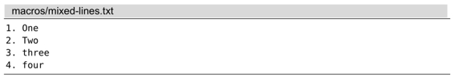
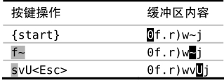
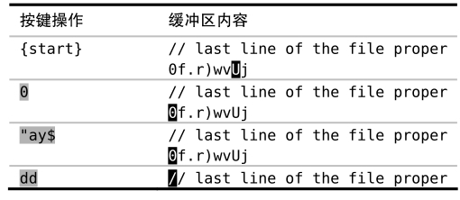

）。而这一次，我们用新命令vU替换~命令，它会把光标处的字母变为大写（参见:h v_U）。
）。而这一次，我们用新命令vU替换~命令，它会把光标处的字母变为大写（参见:h v_U）。技巧71编辑宏的内容
我们已经在技巧68中看到，在宏的结尾添加命令非常容易。但我们如果想删除宏的最后一条命令或者在宏的开头改点什么东西，该怎么办呢？在本节中，我们将学习如何像编辑普通文本一样编辑宏的内容。
问题：非标准格式
假设我们已经遵从录制工作单元中的步骤，将所有按键操作保存至寄存器a了。接下来，我们要处理以下文件，它与之前的文件相比，在格式上略有差异：

有些文本行已经使用了大写字母，而有些行还用的是小写字母。我们在之前的宏中使用~命令切换光标所在处的字母大小写（参见:h~）。而这一次，我们用新命令vU替换~命令，它会把光标处的字母变为大写（参见:h v_U）。
宏中的键盘编码
在本例中，我们用的是一个相对简单的寄存器。但如果我们试着编辑一个很大的宏时，事情很快会变得一团糟。举个例子，让我们回顾一下在技巧69中录制的宏：
➾:reg a
《 --- Registers ---
"a Omoul<80>kb<80>kbdule Rank^[j>GGoend^[
注意到有什么奇怪的地方了么？首先，符号 ^[ 出现了好几次。不论你按的是<Esc>还是<C-[>，Vim都用 ^[ 表示ESC键。
更蹊跷的是代表退格键的符号 <80>kb。分析一下这组按键操作。在刚开始录制这个宏的时候，我输入的是“moul”，但当我发现错误后，又按了几下退格键，随后又输入了单词余下的部分“dule”。
这个动作没什么实际效果。如果我回放这些按键操作，Vim将依次重现我的犯错与改正过程。尽管最终的结果是正确的，但这的确让寄存器的内容难于阅读，而且编辑起来会更复杂。
将宏粘贴到文档中
用于录制宏的寄存器，与用作复制、粘贴操作的寄存器是一样的。因此，如果我们想修改寄存器a中的宏的话，只需将其粘贴至文档中，便可以像编辑普通文本一样编辑它了。
首先，我们按G键，跳到当前文档的结尾，目的是要把寄存器a中的内容粘贴至新的一行。处理这种情况最简单的方式是用:put命令：
➾:put a
为什么不直接用"ap命令呢？因为，在本例的上下文中，p命令会把寄存器a的内容粘贴至当前行的光标之后。而:put命令总会将它们粘贴至当前行的下方，无论寄存器保存的是面向行的还是面向字符的文本块。
编辑宏
现在我们可以像编辑普通文本一样编辑宏了。我们用表11-5所示的命令，将 ~ 替换为 vU。
表11-5 —— 像编辑普通文本一样编辑宏

将宏从文档复制回寄存器
我们已经得到了一组命令序列，它看上去正是我们想要的样子，因此，我们可以将其从文档复制回寄存器。最简单的方式就是运行"add（或者:d a），但这么做可能会在以后导致问题。dd命令将执行面向行的删除操作，因此，寄存器会包含一个拖尾字符 ^J：
➾:reg a
《 0f.r)wvUj^J
该字符表示一个换行符，且在大多数情况下，该字符都无关紧要。但有时这个拖尾字符可能会改变宏的意义。为了保险起见，用面向字符的复制操作把这些字符从文档复制回寄存器会更安全：

我们依次运行命令0以及"ay$，将把该行除回车符之外的每一个字符都复制下来。在把宏的内容保存回寄存器a之后，我们就可以用dd删除这一行了。尽管删除的内容最终将被保存到缺省寄存器，但我们也不会用到它们。
做完以上这些步骤，当前寄存器a中保存着一个新的、改进的宏。我们可将其用于本节刚开始的示例文本。
结论
能够将宏粘贴到文档，进行编辑，然后复制回寄存器中执行，这样做的确方便。但出于宏中的键盘编码所罗列的诸多原因，使用寄存器得特别谨慎。如果你只需将一条命令附加于宏的结尾，那么，按照技巧68中所列的步骤会更简单。
由于Vim的寄存器不过是一些保存文本串的的容器，我们也可以通过编写Vim脚本来操作它们。举个例子，我们能用substitute()函数（与:substitute命令不同，参见:h substitute()）做上述编辑操作：
➾:let @a=substitute(@a, '\~', 'vU', 'g')
如果你对这种方法感兴趣的话，请查阅:h function-list ，以便获得更多的信息。
第五部分模式
本书的这一部分将专门介绍模式（patterns）。对于Vim中某些最强大的命令来讲，它们是不可或缺的部分。我们将会看到一些技巧，它们使得构造正则表达式以及按原义查找文本变得更加容易。
此外，我们还将研究查找命令本身的技术细节，并对两个强大的Ex命令做一番探究：
一个是substitute，它允许我们查找某个模式的所有匹配，并用其他内容替换匹配结果；
另一个是global，它让我们可以在匹配指定模式的所有行上执行任意的Ex命令。